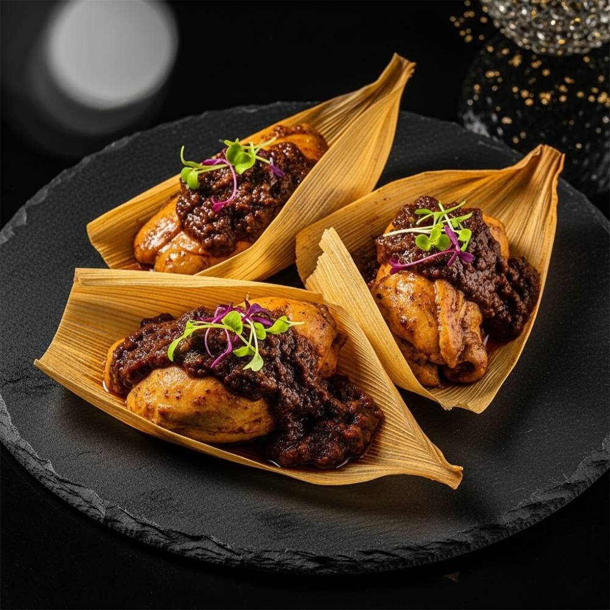

This recipe and image are property of TheRandomRecipe. You can find the original here.
Tender masa dough filled with savory shredded chicken in a rich, complex molé sauce, all steamed in corn husks to perfection. A traditional and flavorful Mexican meal for two.
Soak 8-10 dried corn husks in a large bowl of very hot water for at least 30 minutes, or until they are very flexible and soft. This makes them pliable (flexible and easy to bend) for wrapping. While husks soak, in a small saucepan, combine 1 cup cooked shredded chicken, 1/2 cup ready-made mole sauce (a complex chili sauce, often with nuts, seeds, and chocolate), and 1/4 cup chicken broth. Bring to a gentle simmer (cook gently just below boiling, with small bubbles) over low heat. Cook for 5-7 minutes, stirring occasionally, until the sauce slightly thickens and coats the chicken. Remove from heat and set aside.
Estimated time: 30 minutes (inactive) + 10 minutes (active)
In a medium bowl, whisk together 1 1/2 cups masa harina (corn flour specially prepared for tortillas and tamales), 1 teaspoon baking powder, and 1/2 teaspoon salt. In a separate bowl, cream 1/4 cup vegetable shortening or lard until light and fluffy. Gradually add the masa harina mixture to the shortening, alternating with 1 1/4 cups warm chicken broth (or water), mixing until a soft, uniform dough forms. The dough should be light and fluffy. To test, drop a small piece of dough into a glass of cold water; if it floats, it is ready. If it sinks, beat in a little more broth or water, 1 tablespoon at a time, until it floats.
Estimated time: 15 minutes
Drain the softened corn husks and pat them dry. Choose the widest, unbroken husks. Lay one husk flat with the wider end at the top. Spread about 2-3 tablespoons of the prepared masa dough evenly over the wider half of the husk, leaving a 1-inch border at the top and sides. Spoon 1-2 tablespoons of the chicken mole filling down the center of the masa. Fold the sides of the corn husk over the filling, then fold the narrow bottom end up. Leave the top open. Repeat with remaining husks, masa, and filling. You should get 4-6 tamales.
Estimated time: 20 minutes
Set up a steamer pot: fill the bottom with water (do not let it touch the steamer basket) and bring to a boil. Arrange the tamales upright in the steamer basket, with the open end facing up. Do not pack them too tightly, allowing steam to circulate. Cover the steamer and steam for 45-60 minutes, or until the masa separates easily from the corn husk. This means the tamales are cooked through. If water levels get low during steaming, carefully add more boiling water to the pot.
Estimated time: 45-60 minutes
Carefully remove the cooked tamales from the steamer. Let them cool for a few minutes before unwrapping and serving. Garnish with fresh cilantro, sliced red onion, or a dollop of Mexican crema (ensure dairy-free alternative if needed) if desired.
Estimated time: 5 minutes (inactive)